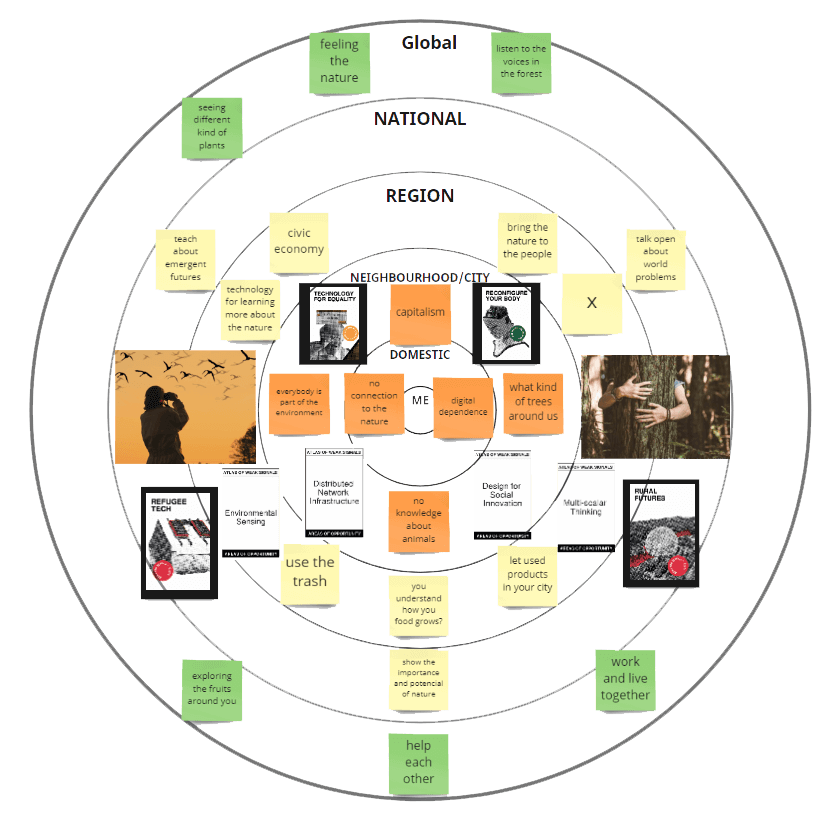
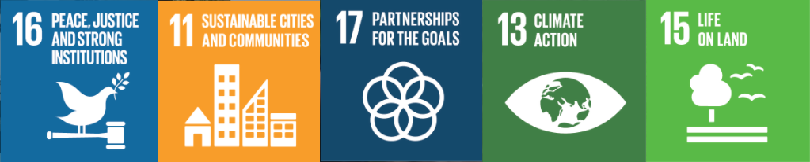
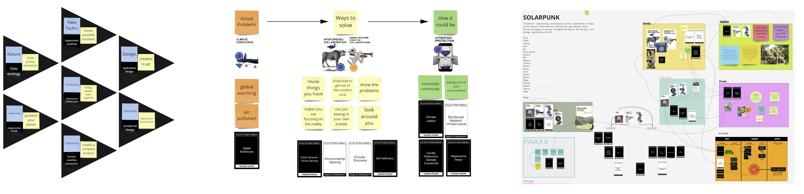

term 1
atlas&weak Signals

personal
This week really helped thinking more intense about me and what is important for me. By creating the design space I explored more about what I really care about and what are my interests. Also the diagram helped me reflect the difference between real nature and living in a crowded city. It´s sad that in our time the most people know more types of cars and brands than the name of the trees, bushes, plants or animals. Also I feel the people who grow up or live for a long time in the city, know less about what is possible to eat in the forest and what is poisoned, like me.

multiscalar diagram
This week we explore our weak signals with each other. Also we had an excursion, where we went on a hike in the Collserola parc in Barcelona. After this excursion we needed to make a multiscale diagram, where we show our weak signals going from the top of the mountain to our flat. Going from the top (middle of the nature) to the suburbs to the city to the metro station to our street to our house to our flat to our table to our computer. The nature is getting less and in the middle of the city you don’t feel being on a nature planet. You see more trees which are coming out of the beton ground and dogs which are just walking on stones and no gras anymore. In the nature on the top you could listen to different kind of birds, saw different kind of trees bushes and soils and sometimes peoples trash (plastic bottle). Mariana showed us a fruit what we can eat, which I wouldn’t tried alone because I thought its not eatable. We also get to know a man who is bird watcher, he explained us interesting things about it. Each year there are less birds flying in the south because of the climate change. But not only because of the weather, he said it´s because of finding food and the cooperation among each other.

inspirations
The "17 Goals of Sustainable Development" inspired me while exploring and creating my weak signals. I focused on the following kind of Goals.
11 Sustainable Cities and Communities: make human settlements safe and resilient
13 Climate Action: take actions to fight the climate change
15 Life on Land: Protect ecosystems and stop desertification and extinction.
16 Peace, Justice and strong Institutions: Promote peaceful societies for justice.
17 Partnership for the Goals: Strength global relations for sustainable development.
dersign space
We needed to create our own designspace, which includes the topics and things with which we want to inspire ourselves and create new ideas. In the first week (Bootcamp) we talked about our classmates knowledge, skills and attitudes, which helped to start making each one of us start communicated in a way to help one another. This exercise was a good start for our collaborative design space (right). After creating our own design space we separated in groups to create a shared space to learn from each other.
